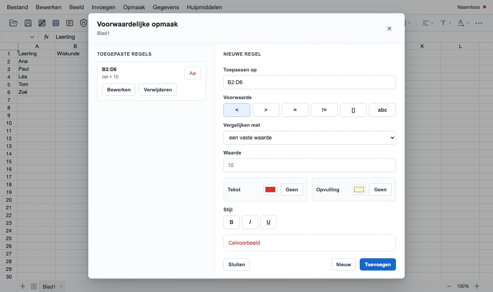

Voorwaardelijke opmaak
Een regel verandert het uiterlijk van de cellen van een bereik die aan een voorwaarde voldoen. Hij volgt de waarden, ingevoerd of berekend.
Een regel maken
- Het bereik selecteren, zonder zijn kop.
- of Opmaak › Voorwaardelijke opmaak.
- De voorwaarde, de vergelijkingswaarde, de kleuren of de stijl kiezen.
- Toevoegen.

| Voorwaarde | De cel |
|---|---|
< | is kleiner dan |
> | is groter dan |
= | is gelijk aan |
!= | is verschillend van |
[] | ligt tussen twee waarden, grenzen inbegrepen |
abc | bevat een tekst, hoofdletters of kleine letters |
Waarmee vergelijken
| Vergelijken met | Voorbeeld |
|---|---|
| een vaste waarde | de cijfers onder 10 |
| een vaste cel | de cijfers onder de drempel in F1 |
| een kolom in dezelfde rij | in kolom C de waarden boven die van kolom B, rij per rij |
Uiterlijk
Tekst en Opvulling kiezen de kleuren, Geen haalt ze weg; B, I, U zetten vet, cursief, onderstreept. Er is minstens één kleur of stijl nodig.
Meerdere regels
De linkerkolom somt de regels van het blad op: Bewerken, Verwijderen. Gelden meerdere regels voor een cel, dan gaat de laatste van de lijst voor, kleur per kleur.
In een bereik met een regel worden tekst- en achtergrondkleuren die rechtstreeks aan de cellen zijn gegeven, niet meer getoond.
De regels worden in het Excel-bestand opgeslagen als voorwaardelijke opmaak van Excel.